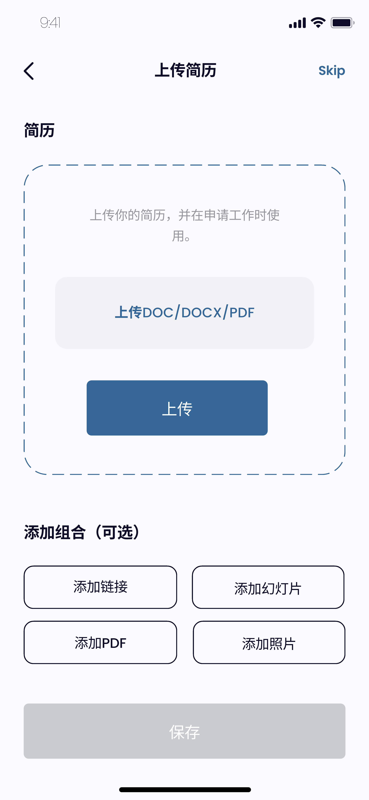
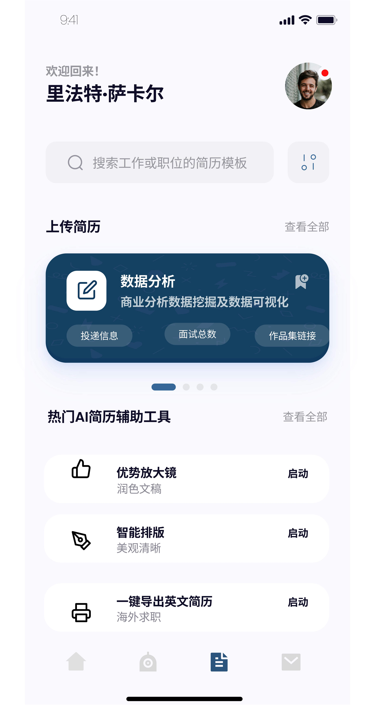
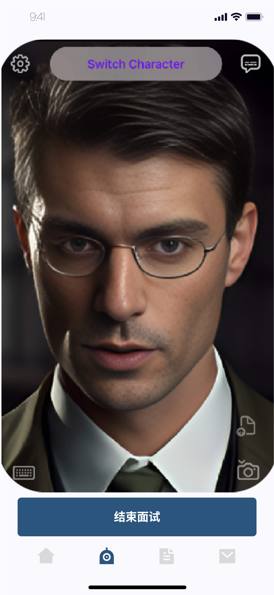
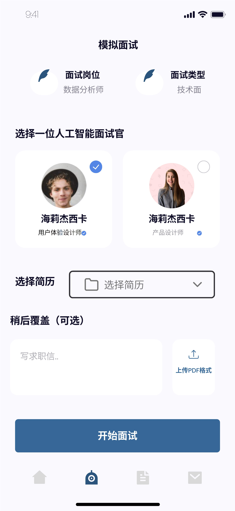
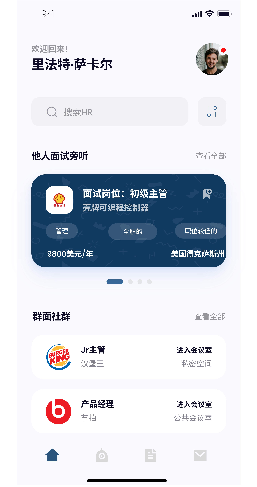
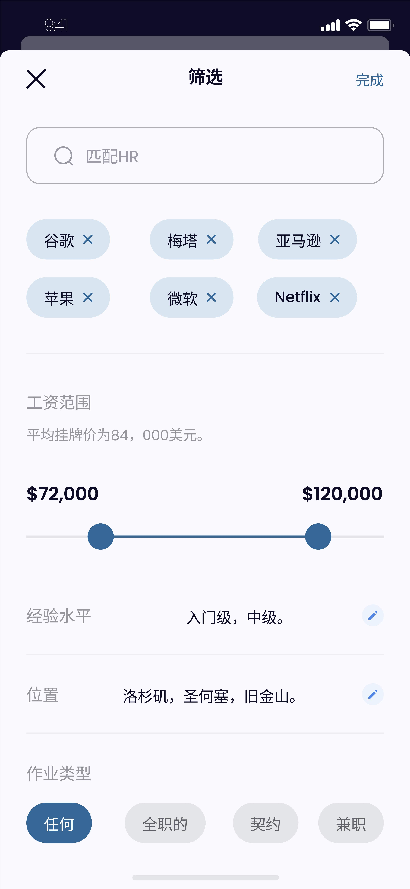
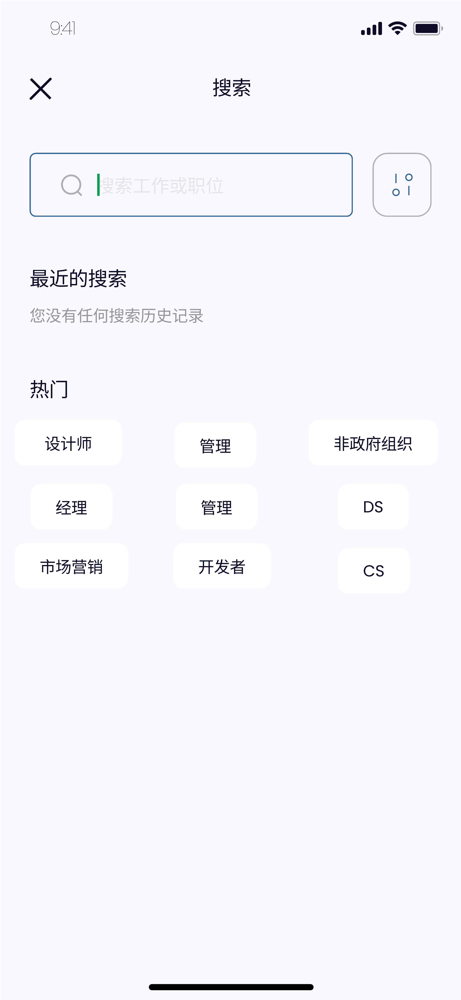
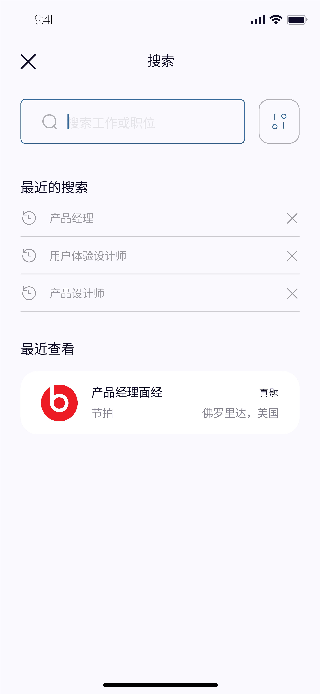
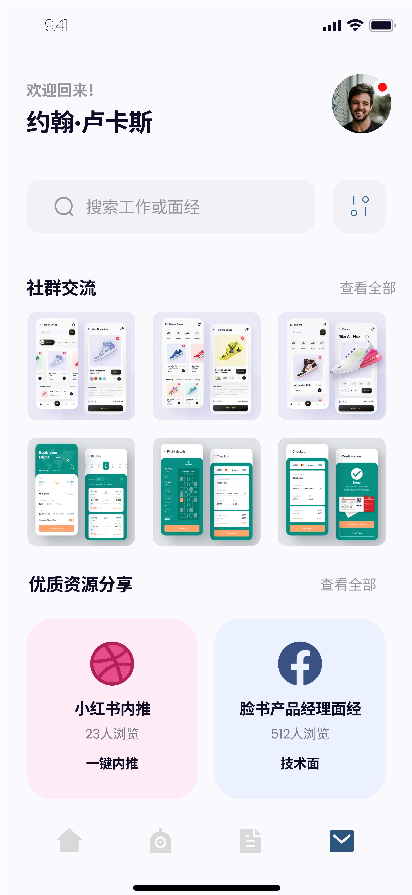

Calm blues. Sharp focus.
A deep-navy and cobalt palette keeps things professional without ever feeling cold.
From rough draft to interview-ready
Upload a draft and our AI Resume system diagnoses structure, content, wording, and formatting — then proposes edits you can apply in one tap.
- Supports DOC, DOCX, and PDF uploads
- Attach photos, links, PDFs, or slide decks alongside
- Side-by-side diff so every change is visible



An AI interviewer, on call 24/7
Choose from multiple interviewer personas — from behavioral to high-pressure. Switch roles mid-session, hand them your resume, and let them probe.
- Voice and text, both ways, in real time
- Question-by-question feedback and pattern recaps
- Resume-aware questions tailored to you


Rehearse with a real HR partner
Book a session, jump into a private room, and run a real interview with a working HR pro. The intangibles — tone, timing, body language — finally get a chance to be coached.
- Filter HRs by industry and role
- Private rooms; nothing is shared without your say-so
- Personalized feedback delivered right after the session



You're not job hunting alone
Sit in on other people's mock interviews in public rooms, or invite peers to a private one. Pick up the unspoken rules of your industry by watching, not reading.
- Curated rooms by role and company
- Private spaces and open meeting rooms
- Unified inbox: interviewer, resume coach, question bank

